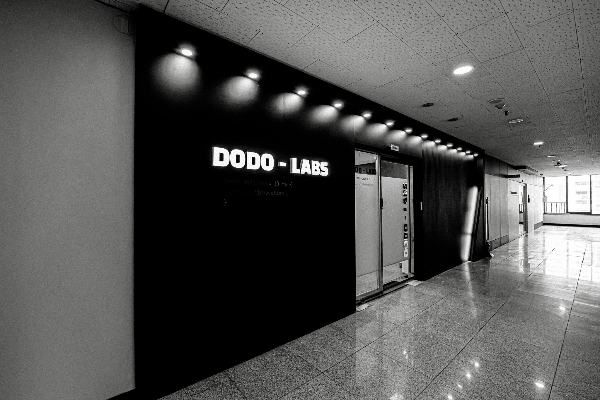

Legal & Safe
우리는 건전한 스포츠 문화를 지향합니다.
국민체육진흥공단의 합법 가이드를 준수하며 사행성 조장을 단호히 거부합니다.

몇대몇은 파편화된 정보로 인한 분석의 한계를 극복하고, 복잡한 데이터를 직관적인 가치로 바꿉니다.
우리는 소수만 점유하던 정보를 누구나 이해하기 쉽게 가공하여,
초보자에게 높은 분석 장벽을 허물어 전문가와 유저가 공존하는 검증된 생태계를 만들어갑니다.
우리는 건전한 스포츠 문화를 지향합니다.
국민체육진흥공단의 합법 가이드를 준수하며 사행성 조장을 단호히 거부합니다.
단순한 직감이 아닙니다. 수만 개의 과거 기록과 실시간 데이터를 정교한 자체 알고리즘으로 분석하여 결과의 객관성을 보장합니다.
데이터는 어려워선 안 됩니다. 복잡한 지표를 보지 않아도 한눈에 파악되는 직관적인 UI/UX로 누구나 전문가처럼 분석할 수 있습니다.
스포츠를 사랑하는 방식이 데이터로 더 즐거워지도록
전문가와 마니아들이 모인 우리는,
기술이 어떻게 사람들의 즐거움을 확장할 수 있는지 매일 연구합니다.
도도랩스의 목적지는 단순히 수익을 내는 것에 있지 않습니다.
우리는 사회적 문제를 해결하고 지속 가능한 미래를 만드는 데 기여하고자 수익의 일부를 환원합니다.
우리가 만드는 제품/서비스가 세상에 선한 영향력이 되길 바랍니다.